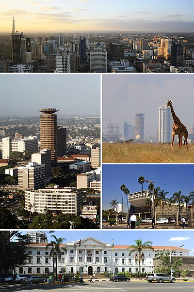

Nairobi is the capital and largest city of Kenya. Known as the "Green City in the Sun," it is a vibrant metropolis that uniquely blends urban development with natural wildlife. The city is home to Nairobi National Park, where you can see lions, giraffes, and rhinos with the city skyline in the background.
Founded in 1899 as a railway depot, Nairobi has grown into one of Africa's major cities and a cultural hub. It serves as the headquarters for many international organizations, including the United Nations Environment Programme (UNEP). The city offers a fascinating mix of modern skyscrapers, bustling markets, and peaceful green spaces.
